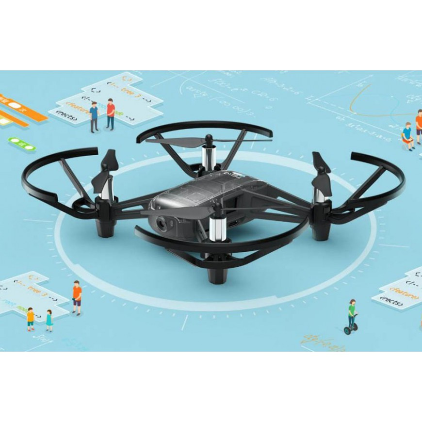
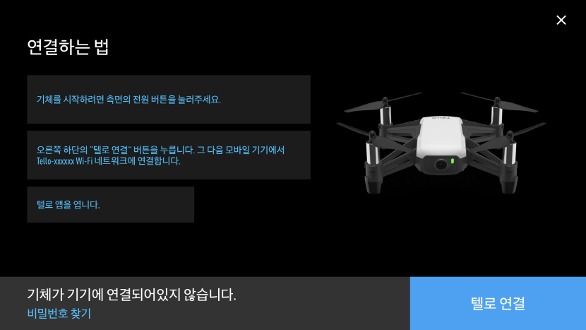
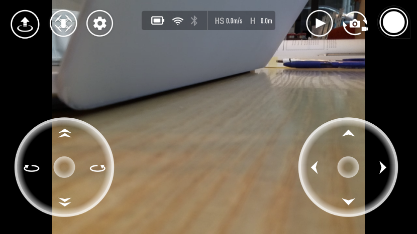

TELLO란 무엇인가?
RYZE 사에서 만든 미니드론으로 핸드폰 어플리케이션과 연동시켜서 사용할 수 있고, 카메라를 통한 사진과 영상 촬영 기능과 다양한 조작 기능을 제공하고 있다.
이번 STEM-CAMP에서 사용하는 기종은 TELLO-EDU 이며, 기존 TELLO보다 교육에 초점을 맞춘 프로그래밍 교육용 드론이다. 직접 Python, Scratch, Swift와 같은 프로그래밍 언어를 사용하여 조작해볼 수 있으며, 본 프로그램에서는 Python을 이용한 TELLO-EDU의 조작을 배워 볼 예정이다.

TELLO 조작방법
어플리케이션을 이용한 조작
Android - https://play.google.com/store/apps/details?id=com.ryzerobotics.tello_
Apple - https://apps.apple.com/kr/app/tello/id1330559633_

1. WIFI 기능을 활성화시킨 후, TELLO-xxxxxx 네트워크를 선택한다.
“주의”
네트워크 연결 시 다른 기기와 연결되어서 드론이 비행하여 다칠 수 있으므로
각 팀별 TELLO의 고유번호를 잘 파악하여서 연결해야 한다.
2.텔로(TELLO) 어플리케이션을 실행하고 텔로를 활성화시킨다.

3.텔로(TELLO)를 자유롭게 조작한다.
“주의”
드론끼리의 충돌, 드론 날개의 직접적인 충돌로 부상이 생길 수 있으니
충분한 공간을 확보한 뒤에 드론을 비행하고 조작해보도록 한다.
파이썬 코드를 이용한 조작
파이썬 코드 링크
https://1drv.ms/u/s!AohfXIAoRwzimBbEfqgrjcUo7jEO?e=rbSazz
1.WSL – Ubuntu 18.04 – LTS를 실행한다.
2.Dronblocks-Tello-Python 폴더를 참조하여 조작을 실행해본다.
Practice 01
TELLO와 UDP 통신하기
import socket
import time
tello_address = ('192.168.10.1', 8889)
sock = socket.socket(socket.AF_INET, socket.SOCK_DGRAM)
sock.bind(('', 9001))
def send(message):
try:
sock.sendto(message.encode(), tello_address)
print("Sending message: " + message)
except Exception as e:
print("Error sending: " + str(e))
def receive():
try:
response, ip_address = sock.recvfrom(128)
print("Received message: " + response.decode(encoding='utf-8') + " from Tello with IP: " + str(ip_address))
except Exception as e:
print("Error receiving: " + str(e))
send("command")
receive()
time.sleep(3)
send("battery?")
receive()
sock.close()
Prcatice 02
TELLO를 키보드로 명령어를 입력해서 장애물 통과하기
import socket
import threading
import time
import sys
tello_address = ('192.168.10.1', 8889)
local_address = ('', 9000)
sock = socket.socket(socket.AF_INET, socket.SOCK_DGRAM)
sock.bind(local_address)
def send(message):
# Try to send the message otherwise print the exception
try:
sock.sendto(message.encode(), tello_address)
print("Sending message: " + message)
except Exception as e:
print("Error sending: " + str(e))
def receive():
# Continuously loop and listen for incoming messages
while True:
# Try to receive the message otherwise print the exception
try:
response, ip_address = sock.recvfrom(128)
print("Received message: " + response.decode(encoding='utf-8'))
except Exception as e:
# If there's an error close the socket and break out of the loop
sock.close()
print("Error receiving: " + str(e))
break
receiveThread = threading.Thread(target=receive)
receiveThread.daemon = True
receiveThread.start()
print('Type in a Tello SDK command and press the enter key. Enter "quit" to exit this program.')
while True:
try:
if (sys.version_info > (3, 0)):
# Python 3 compatibility
message = input('')
else:
message = raw_input('')
if 'quit' in message:
print("Program exited sucessfully")
sock.close()
break
send(message)
except KeyboardInterrupt as e:
sock.close()
break
Challenge
TELLO에 코드를 넣어서 자동으로 장애물 통과하기
참고 – 드론 명령어
| 명령어 | 설명 | 출력 예상 문구 |
|---|---|---|
| -command | TELLO 명령어 모드 | ok / error |
| -takeoff | TELLO 이륙 | ok / error |
| -Land | TELLO 착륙 | ok / error |
| -emergency | 비상정지 | ok / error |
| -up x | xcm 상승 (x: 20-500) | ok / error |
| -down x | xcm 하강 (x: 20-500) | ok / error |
| -left x | xcm 왼쪽으로 비행 | ok / error |
| -right x | xcm 오른쪽으로 비행 | ok / error |
| -forward x | xcm 전진 | ok / error |
| -back x | xcm 후진 | ok / error |
| -cw x | 시계방향으로 x도 회전 | ok / error |
| (x: 1 – 3600) | ||
| -ccw x | 반시계방향으로 x도 회전 | ok / error |
| -flip x | x 방향으로 회전 | ok / error |
| (x : 4방향) | ||
| -speed x | 초속 xcm로 스피드설정 | ok / error |
| -speed? | 현재 속도 출력 | x: 1-100 |
| -battery? | 배터리 잔량 출력 | x: 0-100 |
| -time? | 비행시간 출력 | 시간(time) |
| -height? | 높이 출력 | x: 0-3000 |